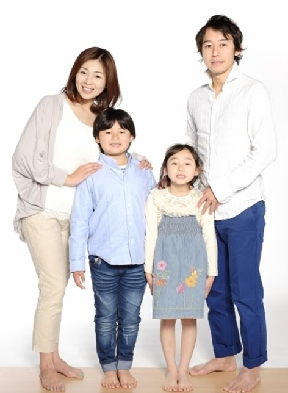

飲食店(ラーメン)の仮想サイト
スマホ用QRコード
概要
2020年よりコロナの影響から飲食業界の状況が大きく変わり 既存の営業方法では新規はおろか既存の顧客の存続も危うい。 この為、ターゲティング・ターゲットに合わせた訴求が必要と判断。 コロナ渦による状況の変化を取り組んだサイト制作を行う。ペルソナ
樫村雄二さん(42)
・男性
・生年月日：S53.5.2
・住所・勤務地：東京江東区
・年商100億円ほどのIT企業社員
〇〇株式会社 営業第2課課長
課内の部下は6人、同課の係長を3年経験後、課長に昇進。
現在に至る。
・家族構成：妻42歳、息子10歳、娘6歳
・夫の収入では生活不十分である為、妻はパートに出ている
・夫の年収は450万程度、妻は100万程度（扶養内で働く）
手取り（夫）： 300,000
手取り（妻）： 80,000
- 夫の収入内訳
-
住宅費 ： 80,000
食費 ： 75,000
光熱費 ： 20,000
通信費 ： 20,000
日用品 ： 15,000
衣類代 ： 20,000
保険 ： 15,000
自動車維持費： 20,000
教育費 ： 15,000
夫の小遣い ： 40,000
貯金 ： 30,000
その他雑費 ： 30,000
・課長に昇進した際に35年ローンのマイホームを購入。
その為、給料は返済に回している。
・夫の小遣いは昼食代含め月４万円程度
・デスクワークが中心であり、最近太り気味。在宅ワークは行わない。
・月２回ほどの草野球を行っていたが、コロナ禍により中止。
・ごはんは妻が健康を意識してヘルシー料理志向になった
・昨今のコロナ渦により衛生面には気を付けている（子供もいるため）
・お店選びは次の４つ
①衛生面を徹底している
②コスパの良さ
③アクセスが良い
④料理がおいしい
ペルソナ作成のロジックは下記
ペルソナ作成までの道のりユーザーフロー
ユーザーが来店するまでのフローを下記と仮定する
・サイトに訪れるきっかけは
衛生面（コロナ対策）と目的の料理の確認
・お店に訪れるきっかけは
家族連れにも安心安全に食事ができる空間
・シーン
家族内の会話で子供がラーメンを食べたいとねだる
妻が野菜有りのラーメンで！と追加注文
・状態
スマートフォンでお店を検索
・導線
①Googleで「江東区 野菜ラーメン」で検索
②検索で出てきた食べログをクリック。
※Rettyが検索で一番最初に表示されたが、感染対策等が表示されてない為、選択肢から外した。
③何となく良さそうなお店を見つけ「感染症対策」と表示されているが、雰囲気や特徴が掴めないのでサイトに飛ぶ。
④感染症対策等のページもあり目的のラーメンも有りそうなのでここへ行く。
コンテンツアイデア
上記により、優先度の高い【衛生面】【店内の様子】【メニューの表示】
また優先度は中ではあるが、お得感を表す【サービス】のクーポンやテイクアウトをトップに表示する。
デザインアイデア
情報設計
・店内の雰囲気をイメージできるような写真を入れる
・「お知らせ」の欄を設け随時お店の状況を更新している事を伝える
・「お知らせ」欄に「コロナ対策」の欄を設け、コロナ対策用の別ページにて情報を伝える
・表示する情報 → 「お知らせ」「おしながき」「こだわり」「お問合せ」
・コロナ対策の他、テイクアウト等の情報もお知らせ欄に載せて店内対策以外のサービスも対応している事を知らせる
デザイン
・ラーメン店であるので商品のラーメンの写真をトップに入れる
・ペルソナには衛生面とメニューの確認を中心に理解してもらうことが目的の為、他の情報も含めて閲覧したい場合は画像等をクリックできるように表示する
・TOPは文字情報の9割はお知らせのみ表示し、他の情報は画像から入るようにした
・お知らせは「コロナ対策ページ」を「新着情報」のすぐ上に配置し目立つ色にして設ける
・「メニュー」については各ラーメンの写真を載せ、サイドメニューも画像、ドリンクメニューは文字情報にした
・「こだわり」についてはスタッフのこだわり等を写真と文字情報を載せる
・カラーは、ベースはシンプルな白、アクセントカラーとしてコロナに負けない強い意志という意味合いで黒、コロナ対策の部分は警告として赤を使用